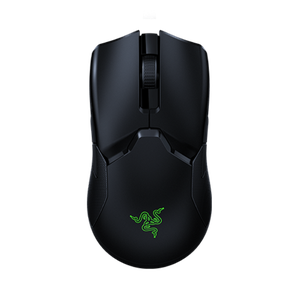
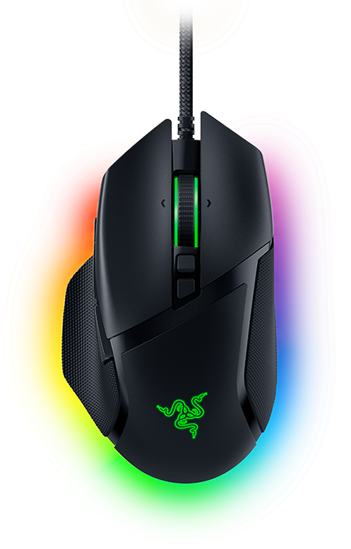
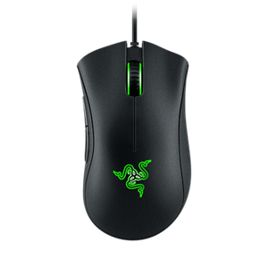

- Цікава інформація
- Однією з незвичайних рис компанії Razer є їхнє захоплення кольором зеленим. Зелений колір став
своєрідним символом Razer і використовується не лише для підсвічування їхніх продуктів, але й для
створення атмосфери внутрішнього співтовариства. Цей колір з'явився зовсім випадково - співзасновник
компанії Razer, Мін-Ліанг Тан, обрав зелений колір для підсвітки своєї першої миші Razer Boomslang
просто тому, що він був його улюбленим кольором.

З тих пір зелений колір став невід'ємною частиною ідентичності Razer. Він часто використовується у їхніх логотипах, упаковках продуктів, рекламних кампаніях та навіть у дизайні їхніх офісів. Крім того, Razer спонсорує "Team Razer", яка складається з професійних геймерів з усього світу, які також називають себе "Зеленою армією" ("Green Army").
Товари Razer:
-

Viper Ultimate
- Дротовий - стандартний кабель
- Оптичний датчик
- Є можливість використання без провода
- Максимальна чутливість(DPI) 16 000
- Вага 0.074 кг
- Довжина кабелю 2.0м
- Кількість кнопок миші 8
-

Basilisk V3
- Дротовий - стандартний кабель
- Оптичний датчик
- Максимальна чутливість(DPI) 26 000
- Вага 0.082 кг
- Довжина кабелю 2.2м
- Кількість кнопок миші 10
-

DeathAdder V2 Mini
- Дротовий - стандартний кабель
- Оптичний датчик
- Максимальна чутливість(DPI) 8500
- Вага 0.109 кг
- Довжина кабелю 1.8м
- Кількість кнопок миші 6
-

DeathAdder Essential
- Дротовий - стандартний кабель
- Оптичний датчик
- Максимальна чутливість(DPI) 6400
- Вага 0.096 кг
- Довжина кабелю 2.1м
- Кількість кнопок миші 5
| Viper Ultimate | Basilisk V3 | DeathAdder | |
|---|---|---|---|
| V2 Mini | Essential | ||
| Кабель 2.0м | Кабель 2.2м | Кабель 1.8м | Кабель 2.1м |
| 74г | 82г | 109г | 96г |
| 16 000 DPI | 26 000 DPI | 8500 DPI | 6400 DPI |
| Кількість кнопок 8 | Кількість кнопок 10 | Кількість кнопок 6 | Кількість кнопок 5 |
| Посилання на офіційний сайт | |||
Інформація
Порівняння
InnerHTML
OuterHTML
Зміна кольору
nodeValue
Додати елемент
Видалити елементи
X